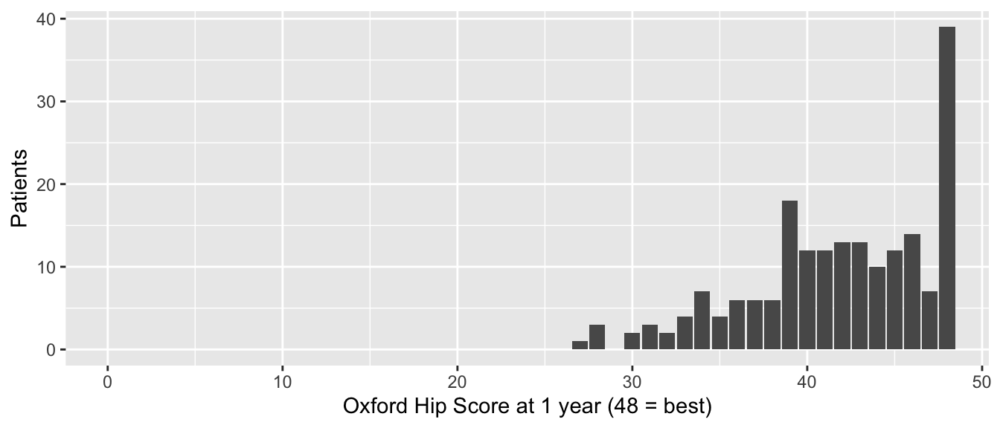
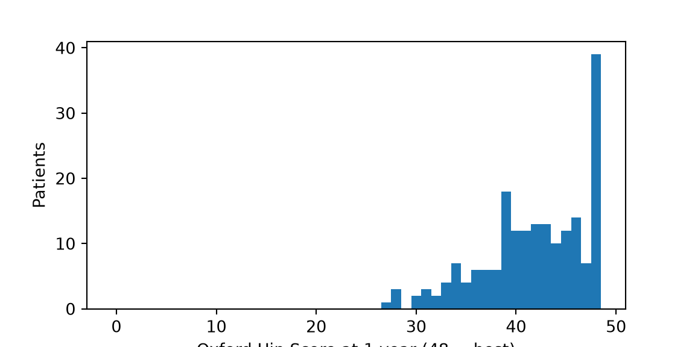
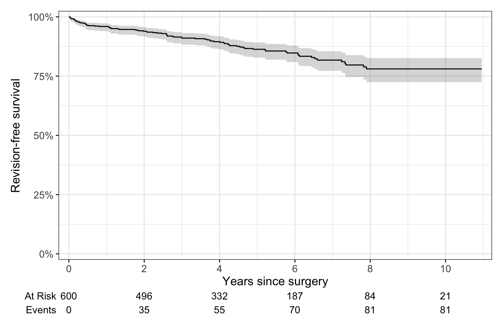
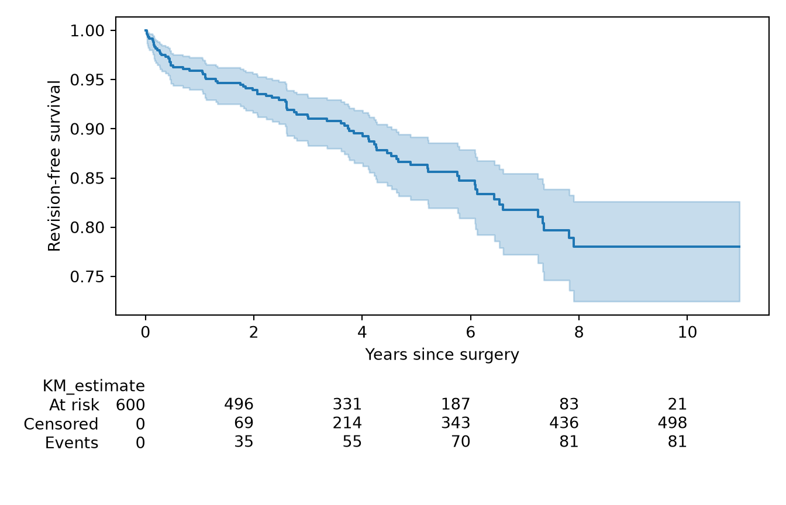

Mean and SD, median and IQR, a proportion, and a Kaplan-Meier survival curve, each with a 95% confidence interval.
Before you compare anything, describe it. This page covers the first row of the decision table: one number (or one curve) that sums up a group of patients, with a 95% confidence interval that says how precisely you know it. Which summary you use depends on the column, the type of data you have. Page 3 explains how to choose.
Note💡 How every section on this page works
Each section answers one question about one of the practice’s datasets: the joint replacement cohort, its patient-reported outcomes, or (for the proportion) the hip fracture data. Its first code block loads the packages and the data, so you can jump straight to the section you need. Run that section’s blocks in order, top to bottom.
To keep the code short, the joint replacement examples use every case, including both cases of patients who had both sides operated on (80 patients in the whole cohort; page 2 counts them). In a real study, decide how to handle them (page 3) and say what you did.
Mean and standard deviation
The question: How old are our patients, and how much do their ages vary?
When to use it
The variable is a measurement (age, BMI, operative time), not a category.
Its distribution is roughly symmetric, without extreme outliers. Check with a histogram (page 3).
The mean and the SD are two short pieces of arithmetic. The confidence interval adds a third.
Mean: add up all the ages and divide by the number of cases.
Distances: subtract the mean from each age. Some distances are positive and some negative, and together they always add up to 0, so they can’t simply be averaged.
Variance: square each distance, which makes them all positive. Add the squares up and divide by n − 1, one less than the number of cases.
Standard deviation (SD): take the square root of the variance. That brings the result back to years: the typical distance of a patient’s age from the mean.
Confidence interval (CI): divide the SD by √n to get the standard error of the mean, then go about 2 standard errors either side of the mean.
Once the numbers are in, a box under “Read the output” does each step by hand.
n = cohort["age"].count()mean = cohort["age"].mean()sd = cohort["age"].std() # pandas divides by n - 1, like R# 95% CI for the mean: mean ± t × (SD / √n)age_ci = stats.t.interval(0.95, df=n -1, loc=mean, scale=sd / n **0.5)print(f"n = {n}, mean = {mean:.2f}, sd = {sd:.2f}")
n = 600, mean = 65.52, sd = 9.44
print(f"95% CI {age_ci[0]:.2f} to {age_ci[1]:.2f}")
95% CI 64.76 to 66.28
Read the output
n = 600: the number of cases with an age recorded.
Mean = 65.5 years: the average age.
SD = 9.4 years: the standard deviation, the typical distance of a patient’s age from the mean. In a bell-shaped distribution about 95% of patients lie within 2 SDs of the mean, here 65.5 ± 2 × 9.4, roughly 47 to 84 years.
95% CI 64.8 to 66.3: the confidence interval for the mean. It tells you how precisely 600 patients pin down the average age of patients like ours. It says nothing about how spread out individual patients are; that’s the SD’s job.
ages <- cohort$agehead(ages, 5) # the first 5 ages
[1] 56 82 59 66 67
sum(ages) /600# step 1: the mean, the sum of the ages ÷ 600 cases
[1] 65.52
distance <- ages -mean(ages) # step 2: each case's distance from the meanhead(distance, 5)
[1] -9.52 16.48 -6.52 0.48 1.48
age_variance <-sum(distance^2) / (600-1) # step 3: the variance, the squared distances added up ÷ (n − 1)c(variance = age_variance, sd =sqrt(age_variance)) # step 4: the SD is its square root
variance sd
89.024641 9.435287
age_se <-sqrt(age_variance) /sqrt(600) # step 5: the standard error, SD ÷ √nt_multiplier <-qt(0.975, df =600-1) # the exact multiplier that "about 2" stands forc(standard_error = age_se, t = t_multiplier)
standard_error t
0.385194 1.963932
mean(ages) +c(-1, 1) * t_multiplier * age_se # the 95% CI
[1] 64.76351 66.27649
ages = cohort["age"]print(ages.head(5).to_list()) # the first 5 ages
[56, 82, 59, 66, 67]
print(ages.sum() /600) # step 1: the mean, the sum of the ages ÷ 600 cases
65.52
distance = ages - ages.mean() # step 2: each case's distance from the meanprint(distance.head(5).round(2).to_list())
[-9.52, 16.48, -6.52, 0.48, 1.48]
age_variance = (distance **2).sum() / (600-1) # step 3: the variance, the squared distances added up ÷ (n − 1)print(age_variance, age_variance **0.5) # step 4: the SD is its square root
89.02464106844742 9.435287015689953
age_se = age_variance **0.5/600**0.5# step 5: the standard error, SD ÷ √nt_multiplier = stats.t.ppf(0.975, df=600-1) # the exact multiplier that "about 2" stands forprint(age_se, t_multiplier)
0.38519397941913075 1.9639322489452784
print(ages.mean() - t_multiplier * age_se, ages.mean() + t_multiplier * age_se) # the 95% CI
64.7635051217192 66.27649487828079
The first case was 56 years old, which is 56 − 65.52 = −9.52 years from the mean. The variance comes to 89.02, and its square root is the SD the software printed, 9.44 years. The standard error is 0.385 years and the exact multiplier is 1.964, so the CI is 65.52 ± 1.964 × 0.385: from 64.76 to 66.28, as in the output.
The multiplier is called t. It is close to 1.96 for large samples and a little bigger for small ones. Quadruple the sample size and the standard error halves; the SD stays about the same.
How to report it
Methods: Continuous variables are reported as mean (standard deviation, SD) when approximately normally distributed.
Results: The mean age at surgery was 65.5 years (SD 9.4; 95% CI for the mean 64.8 to 66.3).
Warning⚠️ Watch out: SD or SEM?
The standard error of the mean (SEM) is the SD divided by √n: 9.44 / √600 ≈ 0.39 years here, much smaller than the SD of 9.4 years. That is why some papers report “mean ± SEM”: it looks tidier. But it describes the precision of the mean, not your patients. Use the SD to describe patients and a 95% CI to show the precision of an estimate. Never report a bare “±” without saying which one it is.
Tip🔀 R vs Python: dividing by n or n − 1
R’s sd() and pandas’ .std() divide by n − 1 (the “sample” SD), which is what you want. NumPy’s np.std() divides by n unless you write np.std(x, ddof=1). With 600 patients the difference is tiny; with 10 it isn’t.
Median and interquartile range
The question: What’s a typical Oxford Hip Score 1 year after hip replacement, and how much do scores vary?
When to use it
The variable is skewed, has a ceiling or floor, has outliers, or is ordinal (an ordered scale such as satisfaction from 1 to 5).
The median is the middle value: half the patients are above it and half below. The interquartile range (IQR) runs from the 25th to the 75th percentile (the first and third quartiles), so it holds the middle half of the patients.
If the variable is a roughly symmetric measurement → the mean and SD are fine and more familiar.
What the calculation really does
The median and the quartiles come from sorting, not from adding.
Sort the scores from lowest to highest.
Median: take the score in the middle of the sorted list. With an even number of scores there are two middle scores, and the median is halfway between them.
Quartiles: do the same a quarter and three quarters of the way along the list. The interquartile range runs from the first of these scores to the second.
Only the order matters, so extreme scores don’t move the median: the lowest score could drop to 0 and the middle of the list would stay where it is.
Once the numbers are in, a box under “Read the output” finds the same scores by their position in the list.
Look at the data first
The Oxford Hip Score (OHS) adds up 12 questions scored 0 to 4, so it runs from 0 to 48, and 48 is the best. The practice records it for every hip replacement, before surgery and at each follow-up visit.
library(tidyverse)proms <-read_csv("data/proms_long.csv", show_col_types =FALSE)ohs_1yr <- proms |>filter(visit =="1yr", !is.na(ohs)) |># ohs is blank for knee replacements and missed visitspull(ohs)length(ohs_1yr) # how many scores
[1] 194
sum(ohs_1yr ==48) # how many of them are the maximum, 48
[1] 39
ggplot(tibble(score = ohs_1yr), aes(score)) +geom_bar() +# one bar per whole scorecoord_cartesian(xlim =c(0, 48)) +# the whole scalelabs(x ="Oxford Hip Score at 1 year (48 = best)", y ="Patients")

import numpy as npimport pandas as pdimport matplotlib.pyplot as pltfrom scipy import statsproms = pd.read_csv("data/proms_long.csv")ohs_1yr = proms.loc[proms["visit"] =="1yr", "ohs"].dropna() # ohs is blank for knee replacements and missed visitsprint(len(ohs_1yr)) # how many scores
194
print((ohs_1yr ==48).sum()) # how many of them are the maximum, 48
39
fig, ax = plt.subplots(figsize=(6, 3))ax.hist(ohs_1yr, bins=np.arange(-0.5, 49)) # one bar per whole score, over the whole scaleax.set_xlabel("Oxford Hip Score at 1 year (48 = best)")ax.set_ylabel("Patients")plt.show()

Scores pile up against the maximum of 48 (a ceiling): 39 of the 194 scores were 48 (the two numbers printed above the plot, in reverse order). Below the pile there’s a long tail of patients who did less well. A mean would be dragged down by that tail; the median isn’t.
quantile(ohs_1yr, probs =c(0.25, 0.50, 0.75)) # first quartile, median, third quartile
25% 50% 75%
39 42 46
DescTools::MedianCI(ohs_1yr, method ="exact") # the median with its 95% CI
median lwr.ci upr.ci
42 41 43
attr(,"conf.level")
[1] 0.9629381
sum(ohs_1yr ==42) # how many scored exactly the median, 42
[1] 13
sum(ohs_1yr <=39) # how many scored the first quartile, 39, or less
[1] 62
mean(ohs_1yr <=39) # the same as a proportion
[1] 0.3195876
print(len(ohs_1yr)) # how many patients
194
print(np.quantile(ohs_1yr, [0.25, 0.50, 0.75])) # first quartile, median, third quartile
[39. 42. 46.]
# scipy has no "median CI" function, but quantile_test() reports one.# Its q argument is the value it would test against; it doesn't change the CI.median_ci = stats.quantile_test(ohs_1yr, q=ohs_1yr.median(), p=0.5).confidence_interval()print(median_ci)
print((ohs_1yr ==42).sum()) # how many scored exactly the median, 42
13
print((ohs_1yr <=39).sum()) # how many scored the first quartile, 39, or less
62
print((ohs_1yr <=39).mean()) # the same as a proportion
0.31958762886597936
Read the output
n = 194: hip replacements with an Oxford Hip Score at 1 year.
Median = 42: the middle score. With whole-number scores many patients share it (13 scored exactly 42: the first of the three numbers at the end of the output), so “half above, half below” is only roughly true.
IQR 39 to 46: the middle half of the patients scored between these two values. At least a quarter scored 39 or less: with ties, 62 of the 194 did, a proportion of 0.32 or 32% (the last two numbers of the output).
95% CI for the median 41 to 43: how precisely 194 patients pin down the median. Under the interval, R prints conf.level and 0.9629: the confidence this interval really has, a little more than the 95% asked for (the box below shows why). Python doesn’t print it.
Note🔍 Under the hood: the median, the quartiles and the CI by hand
sorted_scores <-sort(ohs_1yr) # step 1: sort the 194 scoressorted_scores[c(97, 98)] # step 2: the two middle scores, the 97th and the 98th
[1] 42 42
1+ (194-1) *c(0.25, 0.75) # step 3: the positions a quarter and three quarters of the way along the list
[1] 49.25 145.75
sorted_scores[c(49, 50)] # the 49th and the 50th score: the first quartile lies between them
[1] 39 39
sorted_scores[c(145, 146)] # the 145th and the 146th score: the third quartile lies between them
[1] 46 46
ci_position <-qbinom(0.025, size =194, prob =0.5) # the CI: the binomial distribution gives a position below the middlec(ci_position, 194- ci_position +1) # that position, and the same position counted from the top
[1] 83 112
sorted_scores[c(ci_position, 194- ci_position +1)] # the scores at those two positions are the CI
[1] 41 43
1-2*pbinom(ci_position -1, size =194, prob =0.5) # the confidence these two positions really give
[1] 0.9629381
sorted_scores = np.sort(ohs_1yr) # step 1: sort the 194 scoresprint(sorted_scores[[97-1, 98-1]]) # step 2: the two middle scores, the 97th and the 98th (Python counts from 0, so subtract 1)
[42. 42.]
print(1+ (194-1) * np.array([0.25, 0.75])) # step 3: the positions a quarter and three quarters of the way along the list
[ 49.25 145.75]
print(sorted_scores[[49-1, 50-1]]) # the 49th and the 50th score: the first quartile lies between them
[39. 39.]
print(sorted_scores[[145-1, 146-1]]) # the 145th and the 146th score: the third quartile lies between them
[46. 46.]
ci_position =int(stats.binom.ppf(0.025, 194, 0.5)) # the CI: the binomial distribution gives a position below the middleprint(ci_position, 194- ci_position +1) # that position, and the same position counted from the top
83 112
print(sorted_scores[[ci_position -1, 194- ci_position]]) # the scores at those two positions are the CI
[41. 43.]
print(1-2* stats.binom.cdf(ci_position -1, 194, 0.5)) # the confidence these two positions really give
0.9629380859521739
Both middle scores are 42, so the median is 42. The quartiles sit at positions 49.25 and 145.75. The 49th and 50th scores are both 39, and the 145th and 146th are both 46, so the quartiles are 39 and 46.
The CI for a median uses no formula with an SD in it. It counts instead. Each patient is as likely to score above the true median as below it, like a coin toss. The binomial distribution, which describes coin tosses, says that out of 194 patients, fewer than 83 landing on one side would happen less than 2.5% of the time. So the 83rd score from the bottom is rarely above the true median, and the 83rd from the top (the 112th from the bottom) is rarely below it. Those two scores are 41 and 43, the CI in the output. Because positions are whole numbers, the confidence comes out a little over 95%: 0.9629, the number R reports. This “exact” method needs no assumption about the shape of the data.
How to report it
Methods: Continuous variables that were skewed or bounded are reported as median (interquartile range, IQR).
Results: The median Oxford Hip Score at 1 year was 42 points (IQR 39 to 46; 95% CI for the median 41 to 43).
Warning⚠️ Watch out: report the IQR as two numbers
Write “IQR 39 to 46”, not “IQR 7” (the width). Readers want to know where the middle half of patients sits, not just how wide it is. And don’t report a median with an SD: they belong to different summaries.
Tip🔀 R vs Python: quartiles
R’s quantile() and NumPy’s np.quantile() use the same default method (R calls it “type 7”), so they agree. Other software doesn’t always: gtsummary, SPSS and SAS can give slightly different quartiles on the same data (page 2 shows an example). Say which software you used.
Proportion
The question: What proportion of hip fracture patients died within 30 days?
When to use it
The outcome is yes/no (binomial): death within 30 days, complication, discharge home.
Report the count, the percentage, and a 95% CI for the percentage.
If patients were followed for different lengths of time and the event can happen at any time (revision, death) → use a Kaplan-Meier curve instead. Here every patient was followed for at least 30 days or until death, so the 30-day proportion is complete (“Look at the data first” checks this).
What the calculation really does
A proportion is one count divided by another. The work is in its confidence interval.
Count the patients with the event, and the patients whose outcome is known.
Divide the first count by the second. That is the proportion; multiply it by 100 for a percentage.
The simple recipe for the CI is the proportion ± 1.96 standard errors, with the standard error worked out from the sample’s own proportion. This is the Wald interval, and it works badly when the event is rare or the group is small.
The Wilson interval turns the question around. It collects every true proportion from which our observed proportion would lie no more than 1.96 standard errors away, and it works the standard error out from each of those candidates in turn. The result is not centered on the observed proportion: it is pulled a little toward 50%, and it can never go below 0% or above 100%.
Once the numbers are in, a box under “Read the output” calculates both intervals by hand.
Look at the data first
The hip fracture data hold one row per patient aged 65 or over who was treated for a hip fracture. For a yes/no variable, “looking” means counting, including the missing values.
library(tidyverse)hip_fracture <-read_csv("data/hip_fracture.csv", show_col_types =FALSE)count(hip_fracture, death_30d) # 1 = died within 30 days, 0 = alive at 30 days
# A tibble: 2 × 2
death_30d n
<dbl> <int>
1 0 1126
2 1 74
count(hip_fracture, died, followup_days <=30) # died: 1 = died during follow-up. Did the follow-up end by day 30?
# A tibble: 3 × 3
died `followup_days <= 30` n
<dbl> <lgl> <int>
1 0 FALSE 847
2 1 FALSE 279
3 1 TRUE 74
import pandas as pdfrom scipy import statship_fracture = pd.read_csv("data/hip_fracture.csv")print(hip_fracture["death_30d"].value_counts(dropna=False)) # 1 = died within 30 days, 0 = alive at 30 days
death_30d
0 1126
1 74
Name: count, dtype: int64
print(pd.crosstab(hip_fracture["died"], hip_fracture["followup_days"] <=30)) # died: 1 = died during follow-up. Did the follow-up end by day 30?
followup_days False True
died
0 847 0
1 279 74
No missing values, and only the two codes the codebook allows (0 and 1). The second table checks the follow-up. It ended by day 30 only for the 74 patients who died in that time. All 847 patients who were still alive at the end of their follow-up (died = 0) were followed for longer, so nobody’s 30-day outcome is unknown.
74 of 1,200 = 0.062: the first count shows 74 deaths and 1,126 survivors, 1,200 patients in all. 74 / 1,200 = 0.0617, so 6.2% of patients died within 30 days of admission.
95% CI 0.049 to 0.077: the true 30-day mortality for patients like ours is plausibly anywhere from 4.9% to 7.7%.
Note🔍 Under the hood: the Wald and Wilson intervals by hand
p_hat <- deaths / patients # the observed proportionz <-qnorm(0.975) # the multiplier for 95%, 1.96wald_se <-sqrt(p_hat * (1- p_hat) / patients) # the standard error, worked out from our own proportionp_hat +c(-1, 1) * z * wald_se # the Wald interval: the proportion ± 1.96 standard errors
[1] 0.04805657 0.07527677
wilson_center <- (p_hat + z^2/ (2* patients)) / (1+ z^2/ patients) # Wilson: the center, pulled toward 0.5, and the half-widthwilson_half <- z *sqrt(p_hat * (1- p_hat) / patients + z^2/ (4* patients^2)) / (1+ z^2/ patients)c(center = wilson_center, half_width = wilson_half)
center half_width
0.06306539 0.01366017
wilson_center +c(-1, 1) * wilson_half # the Wilson interval
[1] 0.04940522 0.07672555
lower_limit <- wilson_center - wilson_halfc(p_hat - lower_limit, z *sqrt(lower_limit * (1- lower_limit) / patients)) # at the lower limit: the distance to our proportion, and 1.96 standard errors worked out from the limit
[1] 0.01226144 0.01226144
p_hat = deaths / patients # the observed proportionz = stats.norm.ppf(0.975) # the multiplier for 95%, 1.96wald_se = (p_hat * (1- p_hat) / patients) **0.5# the standard error, worked out from our own proportionprint(p_hat - z * wald_se, p_hat + z * wald_se) # the Wald interval: the proportion ± 1.96 standard errors
0.04805656789247553 0.0752767654408578
wilson_center = (p_hat + z **2/ (2* patients)) / (1+ z **2/ patients) # Wilson: the center, pulled toward 0.5, and the half-widthwilson_half = z * (p_hat * (1- p_hat) / patients + z **2/ (4* patients **2)) **0.5/ (1+ z **2/ patients)print(wilson_center, wilson_half)
0.06306538859753215 0.013660165714987323
print(wilson_center - wilson_half, wilson_center + wilson_half) # the Wilson interval
0.04940522288254483 0.07672555431251947
lower_limit = wilson_center - wilson_halfprint(p_hat - lower_limit, z * (lower_limit * (1- lower_limit) / patients) **0.5) # at the lower limit: the distance to our proportion, and 1.96 standard errors worked out from the limit
0.01226144378412184 0.012261443784121851
The Wald interval would run from 0.048 to 0.075. The Wilson interval runs from 0.049 to 0.077, as in the output. It sits a little higher because its center is 0.0631, not our proportion of 0.0617. The last line shows what defines it: the lower limit, 0.0494, lies 0.0123 below our proportion, and 1.96 standard errors worked out from 0.0494 are also 0.0123. With 74 deaths among 1,200 patients the two intervals are close. With fewer patients or a rarer event they move apart.
How to report it
Methods: Categorical variables are reported as number (percentage). 95% confidence intervals for proportions were calculated with the Wilson score method.
Results: Within 30 days of admission, 74 of 1,200 patients died (6.2%; 95% CI 4.9% to 7.7%).
Warning⚠️ Watch out: percent of what?
Say what the denominator is. Here it’s 1,200 patients: the hip fracture data have one row per patient. In the joint replacement cohort, rows are procedures, and the 80 patients who had both sides operated on (page 2 counts them) count twice, so a percentage there is a percentage of procedures. If some outcomes were missing, the denominator is the patients with a known outcome; say how many were missing.
Don’t use the simple “± 1.96 standard errors” CI (the Wald interval) for proportions. For rare events it can dip below 0%. The Wilson interval doesn’t.
Tip🔀 R vs Python: which CI for a proportion?
R’s prop.test() gives the Wilson interval, but adds a continuity correction unless you set correct = FALSE. scipy’s proportion_ci() calls the uncorrected version "wilson" and the corrected one "wilsoncc". R’s binom.test() and scipy’s method="exact" give the more conservative Clopper-Pearson interval (page 5 uses it). All are acceptable; say which you used.
Kaplan-Meier survival curve
The question: What proportion of implants are still unrevised 5 years after surgery?
When to use it
The outcome is time until an event (revision, death), and patients were followed for different lengths of time.
Some patients are censored: their follow-up ended (the study closed, they moved away, they died) before any revision. We know they went at least that long without one.
A plain percentage (81 of our 600 cases were revised, 13.5%; the next step counts them) ignores follow-up time: a patient operated on last year hasn’t had time to need a revision. The Kaplan-Meier method uses each patient’s follow-up for as long as it lasts.
Page 13 covers survival analysis in depth. This section shows the basic curve.
What the calculation really does
The Kaplan-Meier method builds the curve one revision at a time.
Put the cases in order of follow-up time. At any moment, the cases still being followed and not yet revised are at risk.
Each time a revision happens, work out the fraction of the cases at risk that got past that moment without one: 1 − revisions ÷ cases at risk.
Multiply these fractions together, from the day of surgery up to the time you are interested in. The product is the estimated proportion still unrevised at that time. Plotted against time, it is the curve.
A censored case counts among those at risk until its follow-up ends, and then leaves the count. It never makes the curve step down. But every later revision is divided by fewer cases at risk, so each later step is a little bigger.
Once the curve is drawn, a box under “Read the output” rebuilds the 5-year estimate by hand.
library(tidyverse)library(survival)library(ggsurvfit)cohort <-read_csv("data/cohort.csv", show_col_types =FALSE)# followup_years: time from surgery to revision or censoring; revised: 1 = revised, 0 = censoredcohort |>select(case_id, followup_years, revised) |>head(5)
import pandas as pdimport matplotlib.pyplot as pltfrom lifelines import KaplanMeierFitterfrom lifelines.plotting import add_at_risk_countscohort = pd.read_csv("data/cohort.csv")# followup_years: time from surgery to revision or censoring; revised: 1 = revised, 0 = censoredprint(cohort[["case_id", "followup_years", "revised"]].head(5))
Each row needs exactly two things: how long the patient was followed and whether the follow-up ended with the event (1) or was censored (0). The first case was followed for 6.2 years without a revision; the fifth was revised at 5.8 years. The second output counts 600 cases and 81 revisions, the 81 / 600 = 0.135 above, with a median follow-up of 4.365 years (R shows it as 4.36). Python prints the three numbers without labels.
km <-survfit2(Surv(followup_years, revised) ~1, data = cohort,conf.type ="log-log") # the CI method lifelines useskm |>ggsurvfit() +add_confidence_interval() +add_risktable() +scale_ggsurvfit() +labs(x ="Years since surgery", y ="Revision-free survival")

summary(km, times =5) # the estimate at 5 years
Call: survfit(formula = Surv(followup_years, revised) ~ 1, data = cohort,
conf.type = "log-log")
time n.risk n.event survival std.err lower 95% CI upper 95% CI
5 263 66 0.863 0.0162 0.828 0.892
km = KaplanMeierFitter()km.fit(cohort["followup_years"], event_observed=cohort["revised"])
<lifelines.KaplanMeierFitter:"KM_estimate", fitted with 600 total observations, 519 right-censored observations>
fig, ax = plt.subplots(figsize=(7, 4.5))km.plot_survival_function(ax=ax, legend=False)ax.set_xlabel("Years since surgery")ax.set_ylabel("Revision-free survival")add_at_risk_counts(km, ax=ax)plt.tight_layout()plt.show()

# the estimate and its 95% CI at 5 yearsat_5 = km.survival_function_at_times(5).iloc[0]ci_5 = km.confidence_interval_survival_function_.loc[:5].iloc[-1] # last step at or before 5 yearsprint(at_5, ci_5.to_list())
print((cohort["followup_years"] >=5).sum()) # cases still being followed at 5 years (n.risk in R)
263
Read the output
The curve starts at 100% and steps down at each revision. Censored patients don’t make it step; they just leave the group “at risk”.
The shaded band is the 95% CI. It widens to the right as fewer patients remain under follow-up.
The numbers at risk under the plot show how many patients were still being followed at each time. Trust the right-hand end of the curve less: by 10 years only 21 of the 600 cases remain (the last number in the first row under the plot).
At 5 years: survival 0.863 (95% CI 0.828 to 0.892), with 263 patients still at risk (n.risk in R, the last number Python prints).
The rest of what is printed: in R’s line, n.event 66 is the number of revisions up to 5 years (81 over the whole follow-up) and std.err is the standard error of the estimate. Python’s first line, “600 total observations, 519 right-censored observations”, restates the data: 600 cases − 81 revisions = 519 censored.
km_steps <- cohort |>filter(revised ==1, followup_years <=5) |># the revisions in the first 5 yearscount(followup_years, name ="revisions") |># one row per moment at which a revision happenedmutate(at_risk =map_int(followup_years, \(t) sum(cohort$followup_years >= t)), # step 1: the cases still at risk at that momentgot_past =1- revisions / at_risk) # step 2: the fraction that got past ithead(km_steps, 4)
prod(km_steps$got_past) # step 3: multiply the fractions together
[1] 0.8630935
early = cohort[(cohort["revised"] ==1) & (cohort["followup_years"] <=5)] # the revisions in the first 5 yearskm_steps = early.groupby("followup_years").size().rename("revisions").reset_index() # one row per moment at which a revision happenedkm_steps["at_risk"] = [(cohort["followup_years"] >= t).sum() for t in km_steps["followup_years"]] # step 1: the cases still at risk at that momentkm_steps["got_past"] =1- km_steps["revisions"] / km_steps["at_risk"] # step 2: the fraction that got past itprint(km_steps.head(4))
print(km_steps["got_past"].prod()) # step 3: multiply the fractions together
0.8630934920484891
The first revisions came 0.03 years after surgery: 2 among the 599 cases still at risk, so a fraction of 0.997 got past that moment. The first 5 years hold 59 such moments, with 66 revisions between them. The 59 fractions multiplied together give 0.863, the estimate at 5 years.
How to report it
Methods: Implant survivorship was estimated with the Kaplan-Meier method, with revision for any reason as the end point. Patients were censored at death or at their last follow-up.
Results: Revision-free survival at 5 years was 86.3% (95% CI 82.8% to 89.2%; 263 patients at risk).
Warning⚠️ Watch out: death isn’t just “lost to follow-up”
Treating deaths as censored, as here, assumes the patients who died would have gone on to be revised at the same rate as everyone else. They can’t be: a patient who has died can never be revised. When many patients die during follow-up, 1 minus the Kaplan-Meier estimate overstates the risk of revision. Page 13 shows the competing-risks method that fixes this.
Tip🔀 R vs Python: the confidence band
R’s survfit() uses a “log” CI by default; lifelines uses “log-log”. The estimates are identical but the CIs differ slightly. We set conf.type = "log-log" in R so the two match. Log-log keeps the CI between 0% and 100%; say which you used.
The tables under the two plots differ by one case at 4 years and at 8 years (332 and 84 in R, 331 and 83 in Python). R counts a case whose follow-up ends exactly at that time as still at risk; lifelines doesn’t. For the same reason lifelines’ own count at 5 years would be 258, not 263: the follow-up of 5 cases ends at exactly 5 years. The Python code above counts the way R does. lifelines also adds a row for the cases censored so far.
Exercises
The solutions use the packages and data loaded in the sections above, so run the page from the top first.
1. Describe BMI in the cohort with a mean, SD and 95% CI for the mean. Check the histogram first: is the mean a fair summary?
The histogram is roughly symmetric, so the mean is a fair summary.
Results: Mean BMI was 30.4 kg/m² (SD 5.4; 95% CI for the mean 30.0 to 30.9).
2. A resident wants to summarize length of stay in a Table 1 as “0.9 ± 1.1 days”. What would you suggest instead, and why? Compute it.
TipSolution
Length of stay is strongly right-skewed. The first output below counts the cases by day: 291 + 173 = 464 of the 600 went home on day 0 or 1, and 16 + 8 + 2 = 26 stayed 4 to 6 days. So report the median (IQR). The second output is the resident’s mean and SD, 0.885 and 1.14. “±” is also ambiguous: SD or SEM?